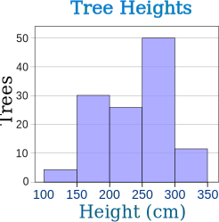
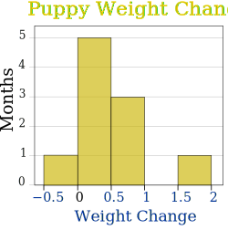
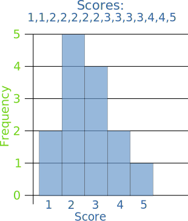

Histograms
Histogram: a graphical display of data using bars of different heights.

It is similar to a Bar Chart, but a histogram groups numbers into ranges .
The height of each bar shows how many fall into each range.
And you decide what ranges to use!
Example: Height of Orange Trees
You measure the height of every tree in the orchard in centimeters (cm)
The heights vary from 100 cm to 340 cm
You decide to put the results into groups of 50 cm:
- The 100 to just below 150 cm range,
- The 150 to just below 200 cm range,
- etc...
So a tree that is 260 cm tall is added to the "250-300" range.
And here is the result:

You can see (for example) that there are 30 trees from 150 cm to just below 200 cm tall
(PS: you can create graphs like that using Make your own Histogram)
Notice that the horizontal axis is continuous like a number line:
Example: How much is that puppy growing?
Each month you measure how much weight your pup has gained and get these results:
0.5, 0.5, 0.3, −0.2, 1.6, 0, 0.1, 0.1, 0.6, 0.4
They vary from −0.2 (the pup lost weight that month) to 1.6
Put in order from lowest to highest weight gain:
−0.2, 0, 0.1, 0.1, 0.3, 0.4, 0.5, 0.5, 0.6, 1.6
You decide to put the results into groups of 0.5:
- The −0.5 to just below 0 range,
- The 0 to just below 0.5 range,
- etc...
And here is the result:

(There are no values from 1 to just below 1.5, but we still show the space.)
The range of each bar is also called the Class Interval
In the example above each class interval is 0.5
Histograms are a great way to show results of continuous data, such as:
- weight
- height
- how much time
- etc.
But when the data is in categories (such as Country or Favorite Movie), we should use a Bar Chart.

Frequency Histogram
A Frequency Histogram is a special graph that uses vertical columns to show frequencies (how many times each score occurs):
|  |
| Here I have added up how often 1 occurs (2 times), how often 2 occurs (5 times), etc, and shown them as a histogram. |